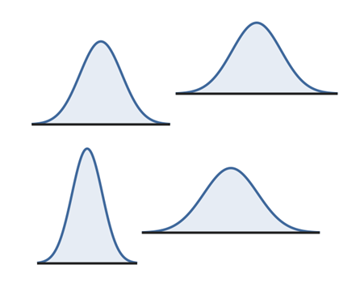

Normal Distribution(s)
Menu location: Analysis_Distributions_Normal.
The standard normal distribution is the most important continuous probability distribution. It was first described by De Moivre in 1733 and subsequently by the German mathematician C. F. Gauss (1777 - 1855). StatsDirect gives you tail areas and percentage points for this distribution (Hill, 1973; Odeh and Evans, 1974; Wichura, 1988; Johnson and Kotz, 1970).
Normal distributions are a family of distributions with a symmetrical bell shape:-

The area under each of the curves above is the same and most of the values occur in the middle of the curve. The mean and standard deviation of a normal distribution control how tall and wide it is.
The standard normal distribution (z distribution) is a normal distribution with a mean of 0 and a standard deviation of 1. Any point (x) from a normal distribution can be converted to the standard normal distribution (z) with the formula z = (x-mean) / standard deviation. z for any particular x value shows how many standard deviations x is away from the mean for all x values. For example, if 1.4m is the height of a school pupil where the mean for pupils of his age/sex/ethnicity is 1.2m with a standard deviation of 0.4 then z = (1.4-1.2) / 0.4 = 0.5, i.e. the pupil is half a standard deviation from the mean (value at centre of curve).

The diagram above shows the bell shaped curve of a normal (Gaussian) distribution superimposed on a histogram of a sample from a normal distribution. Many populations display normal or near normal distributions. There are also many mathematical relationships between normal and other distributions. Most statistical methods make "normal approximations" when samples are sufficiently large.
Central Limit Theorem
In order to understand why "normal approximations" can be made, consider the central limit theorem. The central limit theorem may be explained as follows: If you take a sample from a population with some arbitrary distribution, the sample mean will, in the limit, tend to be normally distributed with the same mean as the population and with a variance equal to the population variance divided by the sample size. A histogram plot of the means of many samples drawn from one population will therefore form a normal (bell shaped) curve regardless of the distribution of the population values.
Technical Validation
The tail area of the normal distribution is evaluated to 15 decimal places of accuracy using the complement of the error function (Abramowitz and Stegun, 1964; Johnson and Kotz, 1970). The quantiles of the normal distribution are calculated to 15 decimal places using a method based upon AS 241 (Wichura, 1988).
z0.001 = -3.09023230616781
Lower tail P(z= -3.09023230616781) = 0.001
z0.25 = -0.674489750196082
Lower tail P(z= -0.674489750196082) = 0.25
z1E-20 = -9.26234008979841
Lower tail P(z= -9.26234008979841) = 9.99999999999962E-21
The first two StatsDirect results above agree to 15 decimal places with the reference data of Wichura (1988). The extreme value (lower tail P of 1E-20) evaluates correctly to 14 decimal places.
Function Definition
Distribution function, Φ(z), of a standard normal variable z:
StatsDirect calculates Φ(z) from the complement of the error function (erfc):
Example
An illustration with chosen figures. Select Normal from the Distributions section of the Analysis menu, enter 3 as the normal deviate (z) and click Calculate. StatsDirect fills the upper tail, lower tail and two tailed P boxes, and the report reads:
Probability distribution calculations
P(z 3) = 0.00134989803163 upper, 0.99865010196837 lower, 0.00269979606326 two sided
So about 0.13% of a normal distribution lies more than three standard deviations above its mean, and about 0.27% lies more than three standard deviations from the mean in either direction: the two tailed P is twice the smaller tail. Nearer the middle of the distribution, with 0.67 as z:
P(z 0.67) = 0.25142889509531 upper, 0.74857110490469 lower, 0.50285779019062 two sided
The function also works in reverse: enter a probability in one of the P boxes and click Invert, and StatsDirect finds the z that gives it. With 0.05 as the two tailed P, the upper tail P becomes 0.025 and the report reads:
z(upper P 0.025) = 1.95996398454005
This is the familiar 1.96: the critical value of z for a two sided test at the 5% level, and the multiplier of the standard error in a 95% confidence interval based on the normal distribution. With 0.25 as the upper tail P:
z(upper P 0.25) = 0.674489750196082
This is the upper quartile of the standard normal distribution: a quarter of any normal distribution lies more than 0.674 standard deviations above its mean, and half lies within 0.674 standard deviations of the mean.
The figures above were calculated in R with the functions shown below; StatsDirect calculates the same values and shows them to the same 15 decimal places (15 significant figures for z).
This R code reproduces the illustration above. It needs no packages and was checked with R 4.6.1. Paste it into R, or save it as a script and run it.
# Normal distribution: the StatsDirect help illustration (tail areas of the standard
# normal deviates 3 and 0.67, and the deviates that cut off upper tails of 0.025 and
# 0.25, as the Distributions calculator reports them) in R
# StatsDirect shows each figure to 15 significant figures and at most 15 decimal places
s15 <- function(x) {
formatC(signif(x, 15), digits = 15, format = "f", drop0trailing = TRUE)
}
# Tail areas of a normal deviate z: pnorm(z) is the lower tail P(Z <= z), and with
# lower.tail = FALSE it is the upper tail P(Z > z). The two sided P is twice the
# smaller tail.
tails <- function(z) {
lower <- pnorm(z)
upper <- pnorm(z, lower.tail = FALSE)
cat("P(z ", z, ") = ", s15(upper), " upper, ", s15(lower), " lower, ",
s15(2 * min(lower, upper)), " two sided\n", sep = "")
}
tails(3) # three standard deviations above the mean
tails(0.67) # close to the upper quartile of the distribution
# Deviates for a tail area: qnorm(p) is the deviate whose lower tail area is p, so
# qnorm(p, lower.tail = FALSE) is the deviate whose upper tail area is p. StatsDirect
# names each inverse by its upper tail P, whichever of its P boxes the P was typed in.
deviate <- function(upper) {
z <- qnorm(upper, lower.tail = FALSE)
cat("z(upper P ", s15(upper), ") = ", s15(z), "\n", sep = "")
}
deviate(0.025) # also from a two tailed P of 0.05: 0.025 in each tail
deviate(0.25) # the upper quartile
# The technical validation figures above, to the 15 significant figures the help shows
z1 <- qnorm(0.001)
cat("z0.001 = ", s15(z1), "\n", sep = "")
cat("Lower tail P(z= ", s15(z1), ") = ", s15(pnorm(z1)), "\n", sep = "")
z2 <- qnorm(0.25)
cat("z0.25 = ", s15(z2), "\n", sep = "")
cat("Lower tail P(z= ", s15(z2), ") = ", s15(pnorm(z2)), "\n", sep = "")